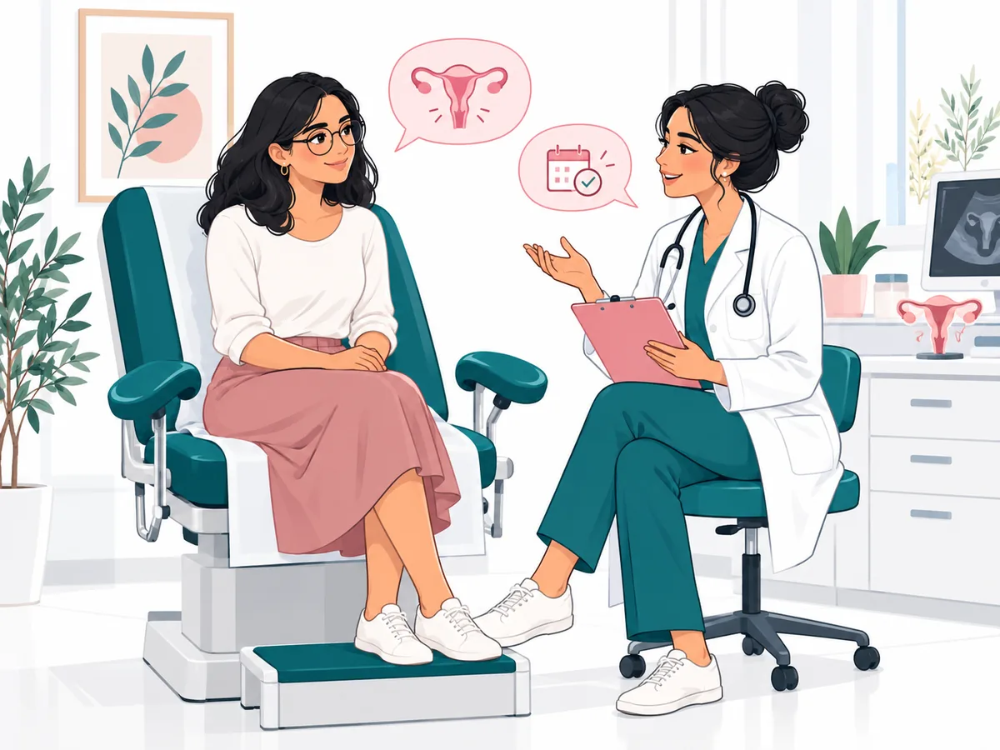

Formation et expertise
Diplômée de la Faculté de médecine de Tunis, le Dr Hager Gabsi Boujelbane exerce en gynécologie obstétrique. Le cabinet accueille les patientes pour une consultation adaptée à leur situation.
Consultations de gynécologie et obstétrique au Centre médical Olivia, sur rendez-vous.
Le cabinet accueille les patientes à la Cité les Palmiers, à côté de Monoprix Zayatine. Suivi de grossesse, contraception, prévention et troubles du cycle : retrouvez les informations utiles pour préparer votre consultation.
♧ Faculté de médecine de Tunis

Une approche attentive de la santé des femmes à L’Aouina, Tunis.
Diplômée de la Faculté de médecine de Tunis, le Dr Hager Gabsi Boujelbane exerce en gynécologie obstétrique. Le cabinet accueille les patientes pour une consultation adaptée à leur situation.
Écoute, explications claires et respect de la confidentialité accompagnent chaque consultation.
Un accompagnement adapté aux différentes étapes de la santé des femmes.
Le cabinet vous accueille sur rendez-vous au Centre médical Olivia.
Complexe Olivia Centre, 1er étage, C1-8, rue Cheikh Mohamed Neifer, Cité les Palmiers (à côté de Monoprix Zayatine), L’Aouina, Tunis 2036
Voir sur Google Maps ↗
Le cabinet se trouve au Complexe Olivia Centre, au 1er étage, cabinet C1-8, rue Cheikh Mohamed Neifer, Cité les Palmiers, Tunis 2036. Le repère à proximité est Monoprix Zayatine. Pour préparer votre déplacement, consultez l’itinéraire Google Maps et contactez le cabinet si vous avez besoin de précisions sur l’accès.
Consultez les témoignages et les évaluations sur la fiche Google du cabinet.
Des repères sur la santé des femmes, adaptés des publications du cabinet à L’Aouina, Tunis.
Découvrir les articles →Retrouvez les fiches du Dr Hager Gabsi Boujelbane dans les annuaires médicaux et sur Google Maps.
Les articles proposent des informations générales et indiquent leurs sources et leur date de publication. Ils ne remplacent pas une consultation ni un diagnostic personnalisé. Pour une question sur votre situation ou pour signaler une information à corriger, contactez le cabinet.
Le cabinet du Dr Hager Gabsi Boujelbane se situe à Hay Wahat (L’Aouina, Tunis), au Complexe Olivia Centre, 1er étage, C1-8. Vous recherchez une gynécologue depuis La Marsa, Aïn Zaghouan ou La Soukra ? Retrouvez les informations pour préparer votre déplacement vers le cabinet à L’Aouina.
Archives de presse — 12 avril 2020
Cette publication évoque une prise de parole du Dr Hager Gabsi à propos des conditions de prise en charge et de travail à l’hôpital pendant la crise du Covid-19. Elle est présentée dans leur contexte de 2020.
Les consultations se font sur rendez-vous. Appelez le cabinet au 93 482 052 pour convenir d’un créneau. Retrouvez les horaires du cabinet.
Le cabinet se situe au Complexe Olivia Centre, 1er étage, C1-8, rue Cheikh Mohamed Neifer, Cité les Palmiers (Hay Wahat), à côté de Monoprix Zayatine. Consultez les informations d’accès ou ouvrez l’itinéraire Google Maps.
Le cabinet du Dr Hager Gabsi est situé à L’Aouina. Depuis Aïn Zaghouan ou La Soukra, utilisez Google Maps pour calculer l’itinéraire depuis votre position. Vous pouvez appeler le cabinet pour préciser l’accès au premier étage.